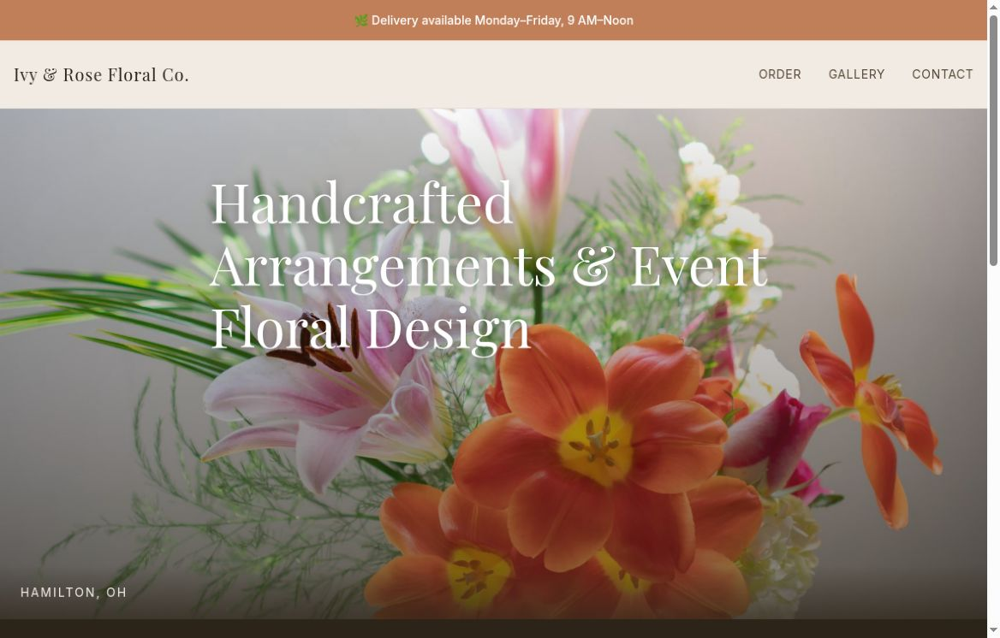

01 / FLORAL STUDIOLet the flowers
Let the flowers
do the talking.
Ivy & Rose Floral Co. brings its arrangements online with a gallery, custom order form, and seasonal campaign page.
Explore the live websiteIvy & Rose Floral Co. / Website design